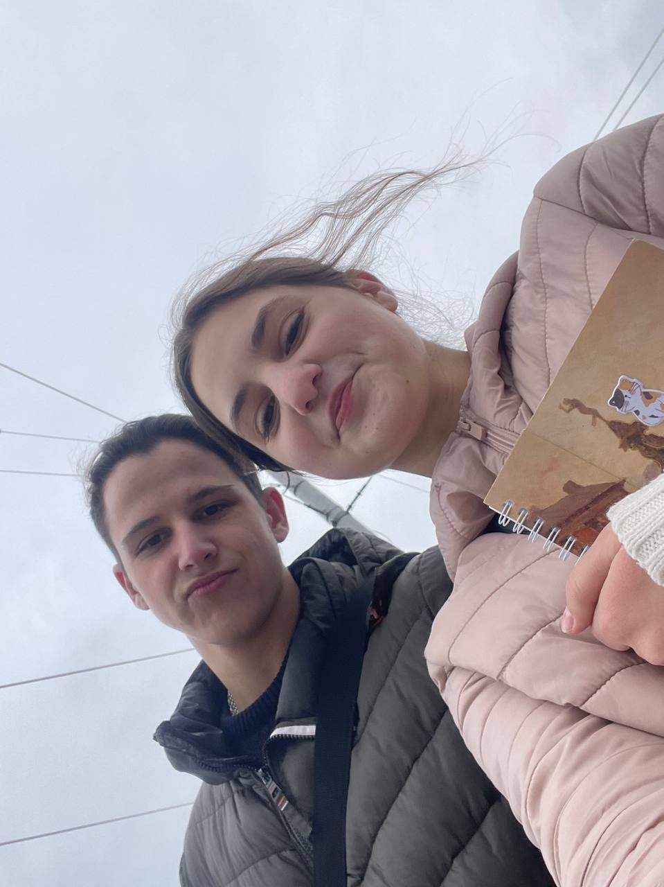
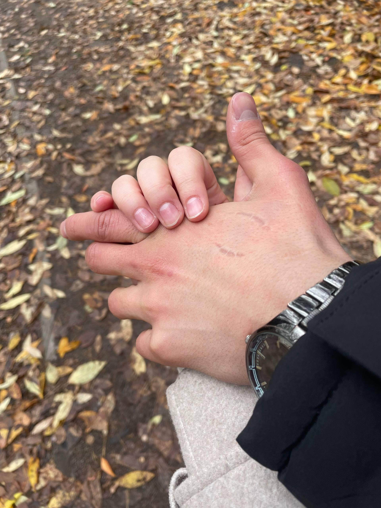
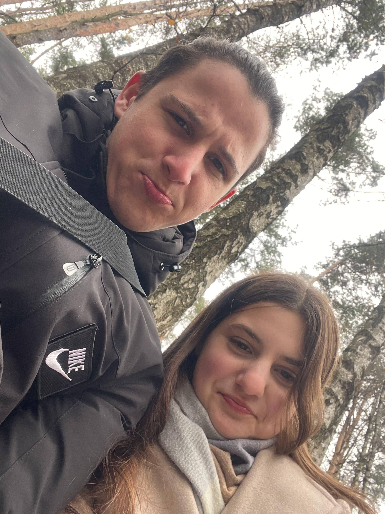
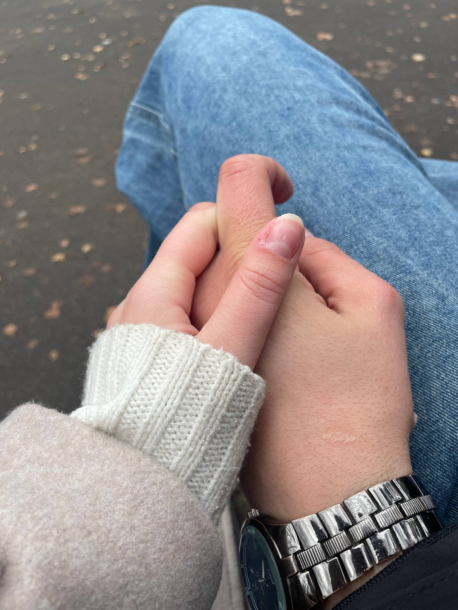
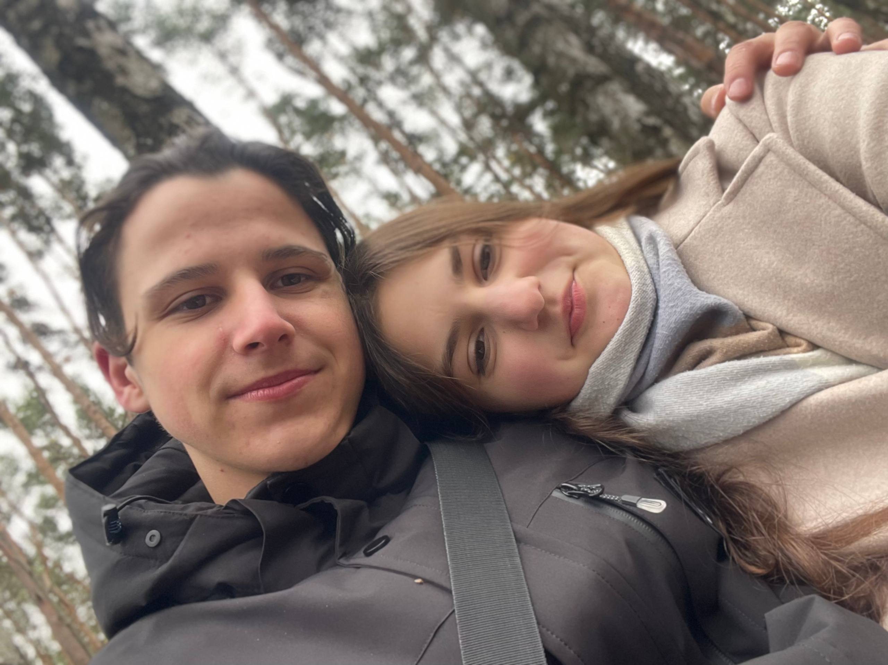
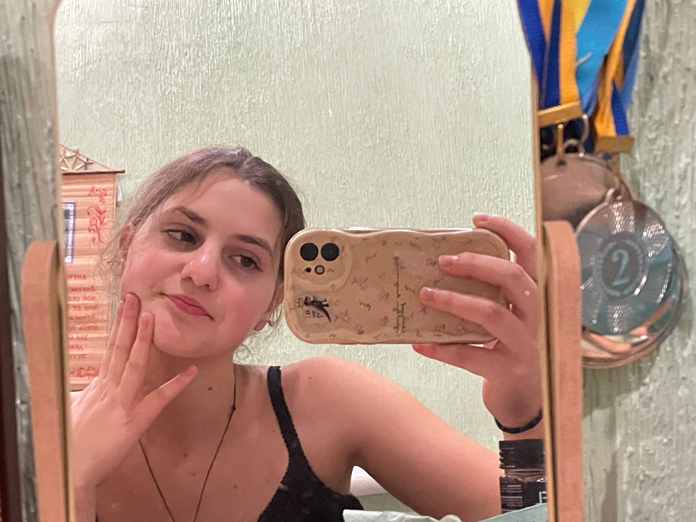
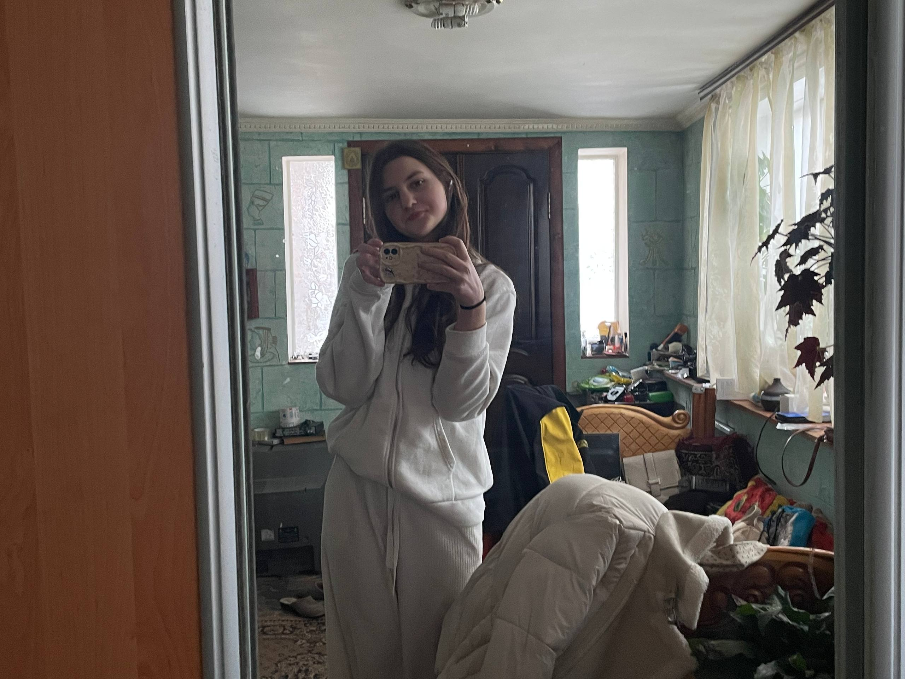

27 августа 2025 • 22:57:15
Момент, когда всё началось ❤️
В эту секунду началась история, которая изменила всё. Отсчет нашего совместного счастья пошел именно отсюда.
История нашей бесконечной любви
В эту секунду началась история, которая изменила всё. Отсчет нашего совместного счастья пошел именно отсюда.
6 сентября: Вечер первой встречи. Кружочек и то самое фото.

Первые обнимашки в тот же вечер:
8 сентября: Через два дня — вторые обнимашки:
С этого момента мы официально Даня и Лера.
16.09 — Завариваем чайочек ☕
17.09 — Тигрица богиня 🐯
18.09 — В переодевалке ✨
19.09 — Вечерний Киев 🌃
20.09 — На дополнительное 📚
21.09 — На дне рождения 🎉
26.09 — Милые волосы 💇♀️
📞 24.09: Первый звонок
🎥 25.09: Первый видеозвонок
Первый поцелуйчик от Леры ❤️
Реакция Дани:
В пономарке на службе (первый от Дани):
3 октября: Обмен поцелуйчиками вечером 💋
5 октября: Прическа 🎀 и Даня в зеркале

7 октября: Сонная Лерочка и кружочек с моря 🌊
10 октября: Первый стих Дани ✍️
11-12 октября: Поцелуйчики и ночные стихи
Первый поцелуй в 13:08. Блокнотики расстояния 📖


22.10: Настроение баловаться 🤪
29.10: Набережная, блокнотики и «За ручки» 🤝


30.10: Даня нарисовал Лерочку 🎨
31.10: Милая Лера и солнышко ☀️
5 ноября: Милота и Даня снова в зеркале ✨
6 ноября: Даня в зеркале (теперь фото):


7 ноября: Лерочка на фоне моря (воспоминания о лете) 🌊

11-12 ноября: Будни Дани
Крутим кубик 🎲
13-14 ноября: Милые губки)

15 ноября: В общаге и бесконечные поцелуи ✨

Целуемся)) ❤️
16 ноября: Парк Совки и очень много фото 🌳









Провожаю Лерочку... Игровые автоматы на вокзале 🏀
Ждем поезд:
21 ноября: В храме 🙏


26-29 ноября: Милые ножки и мандаринка 🍊
30 ноября: Настроение баловаться (фото-подборка)
.jpg)


2 декабря: Школьные будни и чтение книг 📚

5-6 декабря: Милые щечки и Лерочка в храме 🙏
8-9 декабря: Фото-подборка от Лерочки и прекрасные губки 💋


11-12 декабря: Приветы от Дани и Лерочка с кисточкой 🎨
14 декабря: Кружочек под снегом у храма.

21 декабря: Опять встретились! Парк и сонная Лерочка 🥱

29 декабря: Предновогодняя встреча. Поцелуи в Тейсти 🍔

3 января: Просто ляпота ✨

Этот день стал новой важной главой. Уют, цветной свет и мы рядом.
.jpg)


20-22 января: Лерочка в том самом прекрасном платьишке 👗 ✨
28 января: Привет из лета ☀️
1 февраля: С Акимчиком и Елисеем 👦👦


2 февраля: Поцелуйчик, который пытается вырваться наружу 💋
Милая девочка... ))
7 февраля: Пару фоточек напоследок 📸
